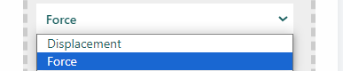

Boundary Conditions

The Boundary Conditions section allows users to define the constraints and loads applied to the model. Properly setting boundary conditions is crucial for accurate simulation and optimization results.

Interface Overview
Adding a Boundary Condition
- Add boundary: Click this link to add a new boundary condition.
Boundary Condition Configuration
When adding or editing a boundary condition, the configuration panel will display several options:
Select the Surface
-
Dirichlet_BC: This boundary condition specifies the fixed values for displacement (i.e., constraints). In Dirichlet boundary conditions, the solution to the variable is assumed.
-
Neumann_BC: This boundary condition specifies the values for forces or stresses applied to the model. In Neumann boundary conditions, a solution is assumed for the derivative of the variable.
-
Outer walls: Select this option if the boundary condition applies to the outer walls of the model.
-
Inner walls: Select this option if the boundary condition applies to the inner walls of the model.
Type of Boundary Condition
-
Force: Specifies a force boundary condition. When selected, the user must enter the force components in the X, Y, and Z directions.
-
Displacement: Specifies a displacement boundary condition. When selected, the user must enter the displacement components in the X, Y, and Z directions.
Force/Displacement Components
- X, Y, Z Fields: Enter the components of the force or displacement in the respective fields. These values define how the force or displacement is applied in each direction.
Save and Continue
- Save and Continue: Click this button to save the current boundary condition and continue to the next step.